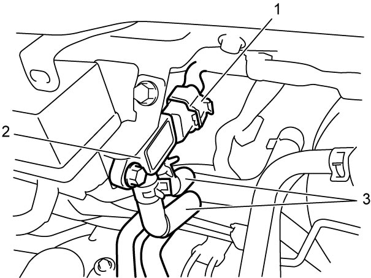

1B
| DPF® Differential Pressure Sensor Removal and Installation |
NOTE:
If DPF® differential pressure sensor is replaced, initialize differential pressure sensor data in ECM.
For details, refer to Description of ECM Registration:D16AA.
Removal
1)Disconnect negative (–) cable at battery.
2)Disconnect connector (1) from DPF® differential pressure sensor (2).
3)Remove DPF® differential pressure sensor and hoses from bracket.
4)Disconnect hoses (3) from DPF® differential pressure sensor.


 "Expand image")
Installation
Reverse removal procedure noting the following point.
•When replacing DPF® differential pressure sensor, initialize DPF® differential pressure sensor data in ECM.